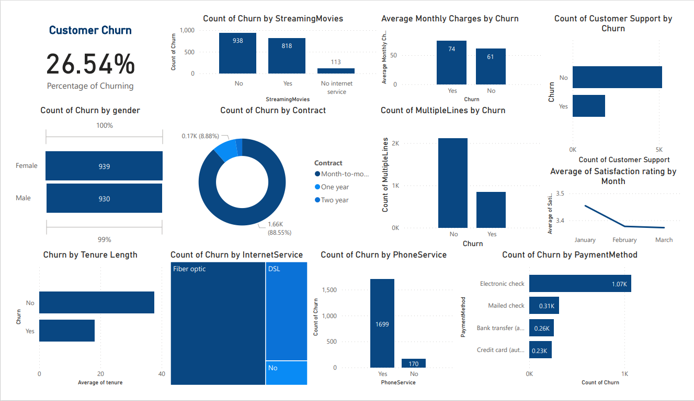

🔧 Excited to share my project in predictive maintenance!
Leveraging advanced data science techniques, I developed a predictive model
to anticipate equipment failures and optimize maintenance schedules. With a perfect
accuracy score of 1.0 and precision, recall, and F1-score all reaching 1.0 for both classes,
the model showcases exceptional performance. It provides actionable insights for proactive
maintenance strategies, empowering organizations to minimize downtime and maximize productivity.
Stay tuned for more updates on my data science journey and impactful projects!

Commercial banks receive a lot of applications for credit cards. Many of them
get rejected for many reasons, like high loan balances, low income levels, or
too many inquiries on an individual's credit report, for example. Manually
analyzing these applications is mundane, error-prone, and time-consuming
(and time is money!). Luckily, this task can be automated with the power
of machine learning and pretty much every commercial bank does so nowadays.
In this project, i will build an automatic credit card approval predictor
using machine learning techniques, just like the real banks do.

Addressing customer churn requires a holistic approach that encompasses
targeted marketing strategies, enhanced customer support services,
promotion of value-added services, and proactive measures to improve
customer satisfaction. By implementing these recommendations, the telecom
company can mitigate churn rates, foster long-term customer relationships,
and drive sustainable growth in the competitive telecommunications market.

Donec eget ex magna. Interdum et malesuada fames ac ante ipsum primis in faucibus. Pellentesque venenatis dolor imperdiet dolor mattis sagittis magna etiam.

Donec eget ex magna. Interdum et malesuada fames ac ante ipsum primis in faucibus. Pellentesque venenatis dolor imperdiet dolor mattis sagittis magna etiam.